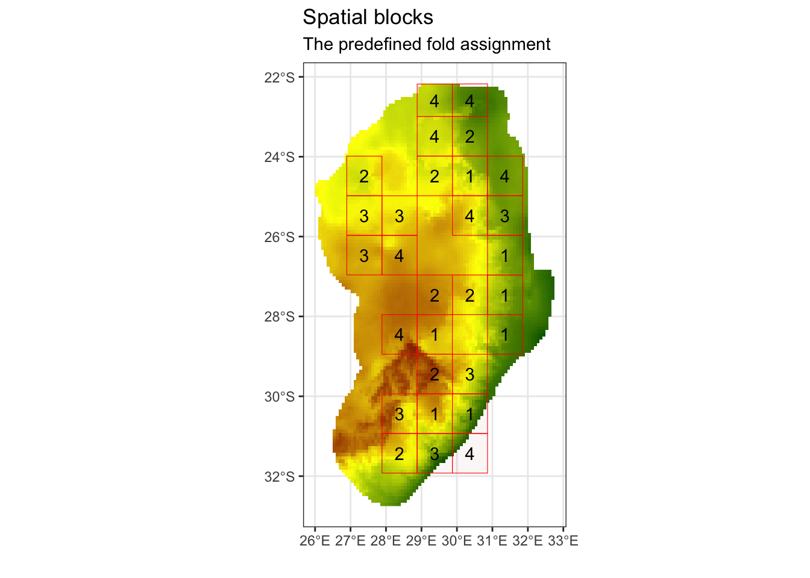

Species Distribution Models
Note: thank you to Geethen Singh for an earlier version of this practical.
Learning objectives
Introduction
Tutorial
#### Install.packages ----
# install.packages('raster')
# install.packages('remotes')
# devtools::install_github("sjevelazco/flexsdm")
# Select 3 and then No
# install.packages('corrplot')
# install.packages('blockCV')
# install.packages('SDMtune')
#### Load libraries ----
library(terra) # raster manipulation## terra 1.5.21library(rnaturalearth) # country boundaries
library(tidyverse) # data manipulation and plotting## ── Attaching packages ─────────────────────────────────────── tidyverse 1.3.1 ──## ✔ ggplot2 3.3.6 ✔ purrr 0.3.4
## ✔ tibble 3.1.7 ✔ dplyr 1.0.9
## ✔ tidyr 1.2.0 ✔ stringr 1.4.0
## ✔ readr 2.1.2 ✔ forcats 0.5.1## ── Conflicts ────────────────────────────────────────── tidyverse_conflicts() ──
## ✖ ggplot2::arrow() masks terra::arrow()
## ✖ tidyr::extract() masks terra::extract()
## ✖ dplyr::filter() masks stats::filter()
## ✖ dplyr::lag() masks stats::lag()
## ✖ dplyr::src() masks terra::src()library(corrplot) # correlation plots## corrplot 0.92 loadedlibrary(blockCV) # spatial block for cross-validation
library(sf) # vector manipulation## Linking to GEOS 3.10.2, GDAL 3.4.2, PROJ 8.2.1; sf_use_s2() is TRUElibrary(flexsdm) # SDM package
library(SDMtune) # SDM package##
## _____ ____ __ ___ __
## / ___/ / __ \ / |/ // /_ __ __ ____ ___
## \__ \ / / / // /|_/ // __// / / // __ \ / _ \
## ___/ // /_/ // / / // /_ / /_/ // / / // __/
## /____//_____//_/ /_/ \__/ \__,_//_/ /_/ \___/ version 1.1.5
##
## To cite this package in publications type: citation("SDMtune").library(patchwork) # combine ggplots##
## Attaching package: 'patchwork'## The following object is masked from 'package:terra':
##
## areaLoad in data
#### Load in data ----
# Read species data
protea <- vect("output/files/making_a_map/p_roup_gbif.shp")
# download and load SA boundary
sern_a <- ne_countries(scale = 'medium', country = c('South Africa', 'Lesotho', 'Swaziland'), returnclass = 'sf')
# dissolve to outer boundary
sern_a %>% group_by(level) %>% summarise() %>% vect() -> sern_a_dissolve
# Download bioclim data
# r <- rast(raster::getData("worldclim",var="bio",res=5))
# returns 19 variables
# or alternatively load from disk
r <- rast("data/sdm/worldclim.tif")#### Visualise raw data ----
plot(r[[1]])
plot(sern_a_dissolve, add = T)
plot(protea, add=T)#### Edit extent of Sern A vector
plot(sern_a_dissolve)sern_a_dissolve <- crop(sern_a_dissolve, ext(15, 33, -35, -20))
plot(sern_a_dissolve)
#### Check projections ----
crs(r) == crs(protea)## [1] TRUEcrs(r) == crs(sern_a_dissolve)## [1] FALSEsern_a_dissolve <- project(sern_a_dissolve, r)
protea <- project(protea, r)
crs(r) == crs(sern_a_dissolve)## [1] TRUEcrs(r) == crs(protea)## [1] TRUECalibration area
#### Calibration area ----
# Create a 150km buffer around our species points to create a prediction region
ca_protea <- calib_area(data = as.data.frame(protea),
x = 'lon', y = 'lat',
method = c('buffer', width = 150000),
crs = crs(protea))
# Plot it out to see if this works
par(mfrow = c(1,1))
plot(ca_protea)
plot(protea, add = TRUE)# Intersect this with our country boundary to remove areas in the ocean
aoi <- terra::intersect(ca_protea, sern_a_dissolve)
plot(ca_protea)
plot(aoi, col = 'red', add = TRUE)
plot(protea, add = TRUE)
Process the covariate data
# Mask the covariates to the area of interest
covariates <- mask(crop(r, aoi), aoi)
plot(covariates[[1]])
plot(aoi, add = TRUE)
# rename the worldclim bands to more reasonable names
names(covariates)## [1] "bio1" "bio2" "bio3" "bio4" "bio5" "bio6" "bio7" "bio8" "bio9"
## [10] "bio10" "bio11" "bio12" "bio13" "bio14" "bio15" "bio16" "bio17" "bio18"
## [19] "bio19"names(covariates) <- c("mean_ann_t","mean_diurnal_t_range","isothermality", "t_seas", 'max_t_warm_m','min_t_cold_m',"t_ann_range",'mean_t_wet_q','mean_t_dry_q','mean_t_warm_q','mean_t_cold_q','ann_p', 'p_wet_m','p_dry_m','p_seas','p_wet_q','p_dry_q','p_warm_q','p_cold_q')
names(covariates)## [1] "mean_ann_t" "mean_diurnal_t_range" "isothermality"
## [4] "t_seas" "max_t_warm_m" "min_t_cold_m"
## [7] "t_ann_range" "mean_t_wet_q" "mean_t_dry_q"
## [10] "mean_t_warm_q" "mean_t_cold_q" "ann_p"
## [13] "p_wet_m" "p_dry_m" "p_seas"
## [16] "p_wet_q" "p_dry_q" "p_warm_q"
## [19] "p_cold_q"# Re-scale temperature values
covariates[[c(1:2,5:11)]] <- covariates[[c(1:2,5:11)]]/10
covariates[[3:4]] <- covariates[[3:4]]/100Check for colinearity
# Using Pearson correlation
cov_colin <- correct_colinvar(covariates, method = c('pearson', th = "0.7"))
# Take a look at the correlations using corrplot
corrplot(cov_colin$cor_table, tl.cex = 0.6)# Show which variables are correlated
cov_colin$cor_variables## $mean_ann_t
## [1] "max_t_warm_m" "min_t_cold_m" "mean_t_wet_q" "mean_t_dry_q"
## [5] "mean_t_warm_q" "mean_t_cold_q"
##
## $mean_diurnal_t_range
## [1] "t_seas" "t_ann_range" "p_dry_m" "p_dry_q" "p_cold_q"
##
## $isothermality
## character(0)
##
## $t_seas
## [1] "mean_diurnal_t_range" "min_t_cold_m" "t_ann_range"
##
## $max_t_warm_m
## [1] "mean_ann_t" "mean_t_wet_q" "mean_t_dry_q" "mean_t_warm_q"
## [5] "mean_t_cold_q"
##
## $min_t_cold_m
## [1] "mean_ann_t" "t_seas" "t_ann_range" "mean_t_wet_q"
## [5] "mean_t_dry_q" "mean_t_warm_q" "mean_t_cold_q"
##
## $t_ann_range
## [1] "mean_diurnal_t_range" "t_seas" "min_t_cold_m"
##
## $mean_t_wet_q
## [1] "mean_ann_t" "max_t_warm_m" "min_t_cold_m" "mean_t_dry_q"
## [5] "mean_t_warm_q" "mean_t_cold_q"
##
## $mean_t_dry_q
## [1] "mean_ann_t" "max_t_warm_m" "min_t_cold_m" "mean_t_wet_q"
## [5] "mean_t_warm_q" "mean_t_cold_q"
##
## $mean_t_warm_q
## [1] "mean_ann_t" "max_t_warm_m" "min_t_cold_m" "mean_t_wet_q"
## [5] "mean_t_dry_q" "mean_t_cold_q"
##
## $mean_t_cold_q
## [1] "mean_ann_t" "max_t_warm_m" "min_t_cold_m" "mean_t_wet_q"
## [5] "mean_t_dry_q" "mean_t_warm_q"
##
## $ann_p
## [1] "p_wet_m" "p_dry_m" "p_wet_q" "p_dry_q" "p_warm_q" "p_cold_q"
##
## $p_wet_m
## [1] "ann_p" "p_wet_q" "p_warm_q"
##
## $p_dry_m
## [1] "mean_diurnal_t_range" "ann_p" "p_seas"
## [4] "p_dry_q" "p_cold_q"
##
## $p_seas
## [1] "p_dry_m" "p_dry_q" "p_cold_q"
##
## $p_wet_q
## [1] "ann_p" "p_wet_m" "p_warm_q"
##
## $p_dry_q
## [1] "mean_diurnal_t_range" "ann_p" "p_dry_m"
## [4] "p_seas" "p_cold_q"
##
## $p_warm_q
## [1] "ann_p" "p_wet_m" "p_wet_q"
##
## $p_cold_q
## [1] "mean_diurnal_t_range" "ann_p" "p_dry_m"
## [4] "p_seas" "p_dry_q"# Select the subset we want
selected_vars <- c('min_t_cold_m', 'max_t_warm_m','isothermality','ann_p','p_seas')
# Subset the covariate data
cov_clean <- covariates[[selected_vars]]
cov_clean## class : SpatRaster
## dimensions : 127, 81, 5 (nrow, ncol, nlyr)
## resolution : 0.08333333, 0.08333333 (x, y)
## extent : 26, 32.75, -32.75, -22.16667 (xmin, xmax, ymin, ymax)
## coord. ref. : lon/lat WGS 84 (EPSG:4326)
## sources : memory
## memory
## memory
## ... and 1 more source(s)
## names : min_t_cold_m, max_t_warm_m, isothermality, ann_p, p_seas
## min values : -5.70, 14.60, 0.49, 320.00, 25.00
## max values : 13.10, 35.00, 0.65, 1390.00, 95.00Presence filtering
# select only the lon/lat and provide a unique ID to each row
protea_df <- as.data.frame(protea) %>% select(lon, lat)
protea_df$id <- 1:nrow(protea_df)
# Run a filter on presence values based on the similarity in values of the environmental covariates
occ_filt_10bin <- occfilt_env(
data = protea_df,
x = 'lon',
y = 'lat',
id = 'id',
env_layer = cov_clean,
nbins = 10 # run ?occfilt_env to find out more on the method
)## Extracting values from raster ...## Number of unfiltered records: 244## Number of filtered records: 103# This removes 125 records and only keeps 99 records due to similarity!
# Plot our old points and new filtered points
par(mfrow = c(1,1))
plot(cov_clean[[1]]);
points(protea_df, pch = 19, cex = 0.3);
points(occ_filt_10bin[,2:3], pch = 19, cex = 0.3, col = 'red')
# most of the filtering is happening where the points are spatially clustered...# Save the 10 bin environmental filtering
protea_filt_pres <- occ_filt_10bin[,2:3]
# Assign 1 to represent presence
protea_filt_pres$pr_ab <- 1Spatial block cross-validation
# We now want to partition our data into different spatial blocks or "folds" to avoid spatial autocorrelation
# find the range value of block sizes by fitting variograms to each environmental raster to find the effective range of spatial autocorrelation
spat_range <- spatialAutoRange(
rasterLayer = raster::raster(cov_clean),
speciesData = st_as_sf(protea_filt_pres, coords = c('lon','lat'), crs = crs(cov_clean)),
doParallel = TRUE,
showPlots = TRUE)## Loading required namespace: rgeos
# This suggest ~110km as an appropriate size for our blocks# We can now create our spatial folds (k) for later cross-validation
# set the random seed, so this the output is the same across machines
spat_blocks1 <- spatialBlock(
speciesData = st_as_sf(protea_filt_pres, coords = c('lon','lat'), crs = crs(cov_clean)),
species = "pr_ab",
rasterLayer = raster::raster(cov_clean),
k = 4,
theRange = 110469,
border = st_as_sf(aoi),
seed = 101
)## Warning: attribute variables are assumed to be spatially constant throughout all
## geometries## The best folds was in iteration 32:
## train_1 test_1
## 1 78 25
## 2 77 26
## 3 77 26
## 4 77 26## Warning: `guides(<scale> = FALSE)` is deprecated. Please use `guides(<scale> =
## "none")` instead.## Warning in st_point_on_surface.sfc(sf::st_zm(x)): st_point_on_surface may not
## give correct results for longitude/latitude data# Assign the folds (or partitions) back onto the presence dataset
protea_filt_pres$folds <- spat_blocks1$foldID
# Each point is now assigned to 1 of 4 partitions
head(protea_filt_pres)## # A tibble: 6 × 4
## lon lat pr_ab folds
## <dbl> <dbl> <dbl> <int>
## 1 28.7 -30.2 1 3
## 2 28.2 -30.8 1 3
## 3 27.8 -26.1 1 3
## 4 29.4 -29.6 1 2
## 5 28.8 -30.4 1 3
## 6 30.9 -24.7 1 4# count the number of presences in each fold
protea_filt_pres %>% group_by(folds) %>% count()## # A tibble: 4 × 2
## # Groups: folds [4]
## folds n
## <int> <int>
## 1 1 25
## 2 2 26
## 3 3 26
## 4 4 26# Rasterize the blocks
grid_env <- rasterize(vect(spat_blocks1$blocks), cov_clean, field = 'folds')## Warning: [vect] argument 'crs' should be a character valueplot(grid_env)
Create pseudo-absences
# We can now create our pseudo-absences and make sure they are evenly spaced across each of our fold grids, based on the number of presence points we have in each fold
# We can also make sure that they are placed away from our presence points by a environmental or distance buffer - here we use a 20 km distance buffer
# pseudo-absences
pa <- lapply(1:4, function(x) {
sample_pseudoabs(
data = protea_filt_pres,
x = 'lon',
y = 'lat',
n = sum(protea_filt_pres$folds == x),
# method = c('env_const', env = cov_clean), # constrain to env less suitable places based on bioclim model of protea presences
# method = 'random',
method = c('geo_const', width = 20000),
maskval = x,
rlayer = grid_env,
calibarea = aoi
)
}) %>% bind_rows() # Extract the partition number for each pseudo-absence point
pa <- sdm_extract(data = pa, x = "lon", y = "lat", env_layer = grid_env)
head(pa)## # A tibble: 6 × 4
## lon lat pr_ab folds
## <dbl> <dbl> <dbl> <dbl>
## 1 30.2 -30.6 0 1
## 2 30.6 -30.3 0 1
## 3 31.7 -26.5 0 1
## 4 31.3 -26.4 0 1
## 5 30.9 -26.5 0 1
## 6 31.2 -27.4 0 1# Count the number of pseudo-absence & presence points in each fold and see if they are equal
pa %>% group_by(folds) %>% count() == protea_filt_pres %>% group_by(folds) %>% count()## folds n
## [1,] TRUE TRUE
## [2,] TRUE TRUE
## [3,] TRUE TRUE
## [4,] TRUE TRUE#### Let's plot the presences and pseudo-absences and view which folds they fall into
ggplot() +
geom_sf(data = st_as_sf(aoi)) +
geom_sf(data = st_as_sf(spat_blocks1$blocks)) +
geom_point(data = rbind(protea_filt_pres, pa), aes(x = lon, y = lat, col = as.factor(folds), pch = as.factor(pr_ab))) +
theme_void()
Extract covariate values for each point
# Prepare a SWD (Sample with Data), which is a class of data specifically used in the SDMtune package
SWDdata <- prepareSWD(
species = 'Protea roupelliae',
p = protea_filt_pres[,1:2],
a = pa[,1:2],
env = cov_clean
)## Extracting predictor information for presence locations...## Extracting predictor information for absence/background locations...SWDdata@data## ID min_t_cold_m max_t_warm_m isothermality ann_p p_seas
## 1 1 0.9 24.8 0.55 743 69
## 2 2 -1.1 24.3 0.53 767 59
## 3 3 1.6 27.1 0.55 712 74
## 4 4 -3.0 22.4 0.52 1031 75
## 5 5 1.7 24.8 0.58 793 67
## 6 6 5.1 24.3 0.64 1010 77
## 7 7 -0.8 24.8 0.53 745 58
## 8 8 -2.3 22.6 0.53 1032 73
## 9 9 0.4 20.9 0.61 942 76
## 10 10 0.8 22.4 0.61 890 76
## 11 11 1.8 26.3 0.55 753 73
## 12 12 3.5 24.4 0.63 955 77
## 13 13 2.4 24.3 0.61 912 72
## 14 14 8.6 26.3 0.58 944 53
## 15 15 1.6 28.8 0.55 665 76
## 16 16 -0.8 23.4 0.54 1024 73
## 17 17 5.3 24.3 0.60 1286 69
## 18 18 -2.4 23.6 0.54 1057 76
## 19 19 4.0 22.9 0.65 1040 77
## 20 20 1.2 23.6 0.58 1034 72
## 21 21 7.6 27.1 0.60 828 58
## 22 22 -1.4 23.1 0.54 964 72
## 23 23 7.3 27.4 0.60 1027 69
## 24 24 5.5 26.1 0.56 1109 80
## 25 25 3.0 24.8 0.61 897 74
## 26 26 -2.1 20.3 0.54 889 65
## 27 27 0.3 24.3 0.60 810 75
## 28 28 -2.7 22.4 0.54 938 60
## 29 29 1.2 23.6 0.56 894 66
## 30 30 -2.1 23.9 0.54 1028 76
## 31 31 3.8 28.6 0.58 760 76
## 32 32 0.4 24.8 0.56 920 70
## 33 33 1.5 25.1 0.58 1006 70
## 34 34 -1.6 22.1 0.54 871 64
## 35 35 2.7 24.6 0.58 915 63
## 36 36 4.7 27.8 0.57 664 82
## 37 37 2.2 27.9 0.56 713 74
## 38 38 1.2 24.2 0.60 841 73
## 39 39 10.5 24.7 0.57 1104 41
## 40 40 12.6 25.7 0.55 1088 39
## 41 41 2.5 22.4 0.60 970 79
## 42 42 -1.9 23.2 0.55 981 75
## 43 43 -0.6 25.0 0.53 745 59
## 44 44 1.6 27.4 0.56 712 80
## 45 45 -0.5 24.6 0.54 769 61
## 46 46 3.3 26.7 0.58 660 64
## 47 47 3.6 26.5 0.60 679 66
## 48 48 -0.3 25.5 0.56 775 68
## 49 49 1.2 23.8 0.58 858 69
## 50 50 8.7 24.6 0.57 1125 44
## 51 51 0.9 23.4 0.60 860 75
## 52 52 2.7 22.3 0.60 1056 77
## 53 53 2.5 21.7 0.60 1045 77
## 54 54 -1.2 23.5 0.54 971 73
## 55 55 8.6 28.9 0.60 904 69
## 56 56 4.7 28.4 0.57 604 81
## 57 57 8.7 24.0 0.57 1068 44
## 58 58 4.8 23.6 0.61 1288 70
## 59 59 1.5 25.4 0.60 798 75
## 60 60 5.8 24.9 0.62 920 65
## 61 61 3.0 21.9 0.64 1011 75
## 62 62 4.4 24.8 0.61 1108 70
## 63 63 8.7 26.8 0.61 896 56
## 64 64 -2.0 22.9 0.53 1006 74
## 65 65 1.1 23.6 0.59 922 63
## 66 66 6.5 25.4 0.61 1322 70
## 67 67 6.4 26.2 0.60 829 63
## 68 68 -1.1 23.9 0.56 778 69
## 69 69 4.7 23.9 0.60 1219 69
## 70 70 3.3 23.4 0.60 1074 77
## 71 71 2.8 22.3 0.60 1024 78
## 72 72 -0.7 23.3 0.56 877 72
## 73 73 -2.1 23.1 0.54 960 74
## 74 74 4.0 26.9 0.57 731 83
## 75 75 3.5 22.6 0.60 1167 77
## 76 76 5.8 24.6 0.61 1379 70
## 77 77 0.5 26.5 0.54 733 72
## 78 78 4.5 32.0 0.54 594 89
## 79 79 -0.2 25.6 0.53 746 62
## 80 80 3.1 21.5 0.65 1031 76
## 81 81 2.6 29.7 0.56 629 83
## 82 82 2.3 26.6 0.56 743 74
## 83 83 -3.8 19.5 0.52 868 70
## 84 84 -1.2 24.5 0.54 986 74
## 85 85 9.5 27.1 0.58 914 50
## 86 86 -0.5 22.7 0.55 988 72
## 87 87 0.7 24.6 0.57 928 68
## 88 88 2.0 24.9 0.59 875 62
## 89 89 10.6 27.0 0.57 949 49
## 90 90 7.1 28.0 0.60 875 70
## 91 91 0.2 21.7 0.60 899 76
## 92 92 0.9 28.1 0.56 781 68
## 93 93 0.3 26.8 0.55 800 69
## 94 94 2.7 22.5 0.63 968 76
## 95 95 0.1 24.3 0.57 868 68
## 96 96 4.5 27.1 0.60 900 72
## 97 97 2.5 28.9 0.58 702 74
## 98 98 -1.0 26.8 0.56 694 73
## 99 99 5.5 28.4 0.59 819 75
## 100 100 1.0 25.2 0.55 704 67
## 101 101 -1.8 24.7 0.55 794 60
## 102 102 10.3 24.8 0.56 1149 41
## 103 103 -2.9 19.4 0.52 826 66
## 104 1 9.5 25.7 0.56 1052 44
## 105 2 10.5 26.4 0.54 1035 45
## 106 3 8.9 31.0 0.56 648 65
## 107 4 6.5 25.8 0.59 1192 66
## 108 5 4.3 24.7 0.60 1076 69
## 109 6 6.4 26.9 0.60 805 66
## 110 7 5.6 26.8 0.61 869 67
## 111 8 7.5 31.4 0.58 603 73
## 112 9 8.3 31.9 0.57 518 77
## 113 10 9.1 26.9 0.63 880 56
## 114 11 2.0 24.7 0.59 837 61
## 115 12 9.6 27.2 0.61 895 55
## 116 13 7.3 27.3 0.61 878 65
## 117 14 11.5 25.8 0.53 1128 39
## 118 15 4.1 23.6 0.60 1152 69
## 119 16 8.7 29.2 0.59 756 59
## 120 17 5.0 26.5 0.61 904 68
## 121 18 6.2 25.1 0.57 963 51
## 122 19 8.3 29.8 0.58 744 63
## 123 20 8.6 32.1 0.55 631 67
## 124 21 6.7 27.1 0.58 1039 67
## 125 22 1.5 29.5 0.55 742 70
## 126 23 9.4 28.8 0.61 790 57
## 127 24 9.7 27.1 0.63 930 53
## 128 25 6.4 27.6 0.60 817 66
## 129 26 0.1 25.3 0.54 722 60
## 130 27 3.2 26.8 0.57 744 60
## 131 28 4.6 32.2 0.54 572 87
## 132 29 4.3 29.9 0.58 514 82
## 133 30 3.6 30.5 0.58 539 82
## 134 31 10.3 30.7 0.59 750 85
## 135 32 9.0 31.0 0.57 648 86
## 136 33 2.5 25.4 0.59 858 69
## 137 34 4.4 32.6 0.54 512 85
## 138 35 -0.7 24.9 0.56 762 69
## 139 36 5.0 26.1 0.57 763 49
## 140 37 0.3 26.0 0.53 787 65
## 141 38 7.7 30.9 0.59 594 73
## 142 39 -1.9 26.0 0.56 692 69
## 143 40 -0.2 25.6 0.56 769 69
## 144 41 3.0 29.9 0.56 649 78
## 145 42 3.5 25.9 0.58 723 55
## 146 43 4.2 30.0 0.56 561 79
## 147 44 7.8 29.7 0.58 835 85
## 148 45 1.8 25.5 0.56 738 60
## 149 46 -1.2 27.0 0.56 675 72
## 150 47 4.1 28.1 0.57 580 78
## 151 48 2.8 25.6 0.59 868 69
## 152 49 4.1 31.8 0.55 591 81
## 153 50 -4.6 17.2 0.50 780 64
## 154 51 3.9 25.9 0.60 915 68
## 155 52 2.5 25.9 0.57 873 65
## 156 53 -1.2 26.4 0.51 675 56
## 157 54 0.3 28.4 0.54 627 71
## 158 55 4.3 24.4 0.59 881 61
## 159 56 2.7 24.8 0.57 841 64
## 160 57 4.5 25.7 0.57 816 53
## 161 58 5.1 25.5 0.57 841 52
## 162 59 2.1 28.8 0.57 685 75
## 163 60 6.6 27.4 0.59 982 73
## 164 61 3.2 30.2 0.55 649 76
## 165 62 7.7 29.1 0.58 844 71
## 166 63 3.4 31.2 0.56 605 79
## 167 64 3.3 25.1 0.59 834 64
## 168 65 0.6 27.1 0.57 686 76
## 169 66 2.8 30.7 0.57 595 78
## 170 67 3.8 25.4 0.57 808 54
## 171 68 -0.3 27.3 0.53 698 71
## 172 69 2.4 29.2 0.59 639 77
## 173 70 7.9 24.7 0.57 995 47
## 174 71 3.4 23.9 0.58 873 63
## 175 72 0.9 26.0 0.56 712 78
## 176 73 0.5 28.0 0.54 652 69
## 177 74 2.5 30.7 0.55 646 78
## 178 75 2.9 30.3 0.59 598 79
## 179 76 3.5 30.9 0.55 629 77
## 180 77 0.2 28.4 0.54 622 71
## 181 78 8.4 31.7 0.56 618 76
## 182 79 8.5 31.9 0.57 505 79
## 183 80 8.5 31.2 0.57 663 73
## 184 81 10.6 31.8 0.59 615 86
## 185 82 -0.1 26.2 0.57 697 74
## 186 83 8.9 30.2 0.60 733 77
## 187 84 7.9 33.2 0.55 564 75
## 188 85 4.1 27.4 0.57 569 81
## 189 86 5.1 32.2 0.56 359 89
## 190 87 5.2 31.0 0.57 405 88
## 191 88 -1.6 25.7 0.54 842 60
## 192 89 10.4 30.0 0.59 844 84
## 193 90 4.9 26.4 0.57 936 79
## 194 91 4.1 27.7 0.57 544 81
## 195 92 4.6 29.2 0.58 503 83
## 196 93 9.0 30.7 0.58 619 82
## 197 94 8.8 30.6 0.58 716 76
## 198 95 8.4 31.8 0.56 606 77
## 199 96 5.1 33.8 0.55 336 84
## 200 97 4.1 27.3 0.56 572 80
## 201 98 -0.6 26.8 0.54 782 61
## 202 99 -1.0 27.0 0.57 682 73
## 203 100 4.2 26.9 0.57 704 79
## 204 101 4.6 29.3 0.57 496 82
## 205 102 10.4 32.9 0.60 461 91
## 206 103 8.6 31.0 0.58 563 84# For some reason ID is included, so we need to remove this...
SWDdata@data <- SWDdata@data[-1]Fit the model
RandomForest with random folds
# We can now fit our models! Let's first create random folds so that we can compare the output with the spatial blocking folds
rand_folds <- randomFolds(SWDdata, k = 4, only_presence = TRUE, seed = 25)
# Run a RandomForest model with default setting and random folds
rf_randcv <- train(method = 'RF', data = SWDdata, folds = rand_folds)# Check the overall AUC and TSS values
paste0('Testing AUC: ', round(SDMtune::auc(rf_randcv, test = TRUE),2))## [1] "Testing AUC: 0.97"paste0('Testing TSS: ', round(SDMtune::tss(rf_randcv, test = TRUE),2))## [1] "Testing TSS: 0.88"RandomForest with spatial folds
# Our initial spatial blocking did not include the pseudo-absence data, so let's re-run the spatialBlock function to include both presence (1) and pseudo-absences (0)
# we can now use our previously predefined blocks
spat_blocks2 <- spatialBlock(speciesData = st_as_sf(bind_rows(protea_filt_pres, pa), coords = c('lon','lat'), crs = crs(cov_clean)),
species = "pr_ab",
rasterLayer = raster::raster(cov_clean)[[1]],
selection = 'predefined',
k = 4,
blocks = spat_blocks1$blocks,
foldsCol = "folds",
seed = 101) ## train_0 train_1 test_0 test_1
## 1 78 78 25 25
## 2 77 77 26 26
## 3 77 77 26 26
## 4 77 77 26 26## Warning: `guides(<scale> = FALSE)` is deprecated. Please use `guides(<scale> =
## "none")` instead.## Warning in st_point_on_surface.sfc(sf::st_zm(x)): st_point_on_surface may not
## give correct results for longitude/latitude data
# View the output
spat_blocks2$folds## [[1]]
## [[1]][[1]]
## [1] 199 190 189 36 184 192 24 205 200 194 56 203 204 193 195 188 74 134
## [19] 75 147 71 135 141 52 152 144 81 78 44 137 131 133 146 132 150 41
## [37] 182 183 181 187 186 206 6 198 197 196 169 15 166 179 164 177 37 172
## [55] 162 175 168 178 94 80 27 61 59 13 91 38 10 97 96 9 62 25
## [73] 51 55 165 163 90 66 58 76 23 3 171 180 11 176 157 77 185 98
## [91] 82 202 142 149 48 68 143 138 136 154 151 49 28 201 191 101 54 18
## [109] 84 22 20 16 4 30 83 153 42 8 73 86 64 85 174 155 89 29
## [127] 14 158 159 35 1 2 47 167 5 46 45 100 79 156 139 43 129 130
## [145] 148 7 140 145 40 173 170 161 160 57 39 102
##
## [[1]][[2]]
## [1] 111 53 12 112 31 70 19 99 107 69 118 108 124 116 17 123 106 109 128
## [20] 122 60 67 119 120 110 95 93 92 26 34 32 125 103 87 33 115 63 21
## [39] 126 127 113 88 65 114 72 104 105 117 121 50
##
##
## [[2]]
## [[2]][[1]]
## [1] 199 190 189 36 184 192 24 205 200 194 56 203 204 193 195 188 74 111
## [19] 53 12 112 31 70 19 99 182 183 181 187 186 206 6 198 197 196 169
## [37] 15 166 179 164 177 37 172 162 175 168 178 94 80 27 61 59 13 91
## [55] 38 10 97 96 9 62 25 51 55 165 163 90 66 58 76 23 3 171
## [73] 180 11 176 157 77 185 98 82 202 107 69 118 108 124 116 17 123 106
## [91] 109 128 122 60 67 119 120 110 28 201 191 101 95 93 92 26 34 32
## [109] 125 103 87 33 115 63 21 126 127 113 85 174 155 89 29 14 158 159
## [127] 35 1 2 47 167 5 46 45 100 79 156 88 65 114 72 104 105 117
## [145] 121 50 40 173 170 161 160 57 39 102
##
## [[2]][[2]]
## [1] 134 75 147 71 135 141 52 152 144 81 78 44 137 131 133 146 132 150 41
## [20] 142 149 48 68 143 138 136 154 151 49 54 18 84 22 20 16 4 30 83
## [39] 153 42 8 73 86 64 139 43 129 130 148 7 140 145
##
##
## [[3]]
## [[3]][[1]]
## [1] 199 190 189 36 184 192 24 205 200 194 56 203 204 193 195 188 74 134
## [19] 75 147 71 135 141 52 152 144 81 78 44 137 131 133 146 132 150 41
## [37] 111 53 12 112 31 70 19 99 182 183 181 187 186 206 6 198 197 196
## [55] 94 80 27 61 59 13 91 38 10 97 96 9 62 25 51 185 98 82
## [73] 202 107 69 118 108 124 116 17 123 106 142 149 48 68 143 138 136 154
## [91] 151 49 109 128 122 60 67 119 120 110 28 201 191 101 95 93 92 26
## [109] 34 32 125 103 87 33 115 63 21 126 127 113 54 18 84 22 20 16
## [127] 4 30 83 153 42 8 73 86 64 88 65 114 72 104 105 117 121 50
## [145] 139 43 129 130 148 7 140 145 39 102
##
## [[3]][[2]]
## [1] 169 15 166 179 164 177 37 172 162 175 168 178 55 165 163 90 66 58 76
## [20] 23 3 171 180 11 176 157 77 85 174 155 89 29 14 158 159 35 1 2
## [39] 47 167 5 46 45 100 79 156 40 173 170 161 160 57
##
##
## [[4]]
## [[4]][[1]]
## [1] 134 75 147 71 135 141 52 152 144 81 78 44 137 131 133 146 132 150
## [19] 41 111 53 12 112 31 70 19 99 169 15 166 179 164 177 37 172 162
## [37] 175 168 178 55 165 163 90 66 58 76 23 3 171 180 11 176 157 77
## [55] 107 69 118 108 124 116 17 123 106 142 149 48 68 143 138 136 154 151
## [73] 49 109 128 122 60 67 119 120 110 95 93 92 26 34 32 125 103 87
## [91] 33 115 63 21 126 127 113 54 18 84 22 20 16 4 30 83 153 42
## [109] 8 73 86 64 85 174 155 89 29 14 158 159 35 1 2 47 167 5
## [127] 46 45 100 79 156 88 65 114 72 104 105 117 121 50 139 43 129 130
## [145] 148 7 140 145 40 173 170 161 160 57
##
## [[4]][[2]]
## [1] 199 190 189 36 184 192 24 205 200 194 56 203 204 193 195 188 74 182 183
## [20] 181 187 186 206 6 198 197 196 94 80 27 61 59 13 91 38 10 97 96
## [39] 9 62 25 51 185 98 82 202 28 201 191 101 39 102As we can see, we have 4 folds In each of these we have our training data [[1]] and our testing data [[2]]. Also, as you can see from the console output, the training/testing split is approximately 70% training, 30% testing.
# Run a RandomForest model with default setting and spatial folds
rf_sbcv <- train(method = 'RF', data = SWDdata, folds = spat_blocks2)# Check the overall AUC and TSS values
paste0('Testing AUC: ', round(SDMtune::auc(rf_sbcv, test = TRUE),2))## [1] "Testing AUC: 0.78"paste0('Testing TSS: ', round(SDMtune::tss(rf_sbcv, test = TRUE),2))## [1] "Testing TSS: 0.55"# Extract the ROC curve and AUC values for each model
source('scripts/functions/extract_roc_vals.R')## Loading required package: pROC## Type 'citation("pROC")' for a citation.##
## Attaching package: 'pROC'## The following object is masked from 'package:SDMtune':
##
## auc## The following objects are masked from 'package:stats':
##
## cov, smooth, varspec_sens_vals <- extract_spec_sens_vals(rf_sbcv, spat_blocks2, SWDdata)## Setting levels: control = 0, case = 1## Setting direction: controls < cases## Setting levels: control = 0, case = 1## Setting direction: controls < cases## Setting levels: control = 0, case = 1## Setting direction: controls < cases## Setting levels: control = 0, case = 1## Setting direction: controls < casesauc_vals <- extract_auc_vals(rf_sbcv, spat_blocks2, SWDdata)## Setting levels: control = 0, case = 1
## Setting direction: controls < cases## Setting levels: control = 0, case = 1## Setting direction: controls < cases## Setting levels: control = 0, case = 1## Setting direction: controls < cases## Setting levels: control = 0, case = 1## Setting direction: controls < casesauc_vals$label <- paste0(auc_vals$model_no, ": ", round(auc_vals$auc,2))# ROC curves with AUC values for each model
ggplot(data = spec_sens_vals) +
geom_abline(aes(slope = 1, intercept = 0), lty = 2) +
geom_path(aes(x = 1- specificities, y = sensitivities, group = model_no, col = as.factor(model_no)), alpha = 0.8) +
scale_colour_viridis_d(name = 'Model no. & AUC',
labels = auc_vals$label) +
labs(x = 'False Positive Rate', y = 'True Positive Rate') +
theme_bw() +
theme(panel.grid = element_blank(),
legend.position = c(0.8, 0.25),
legend.title = element_text(size = 8),
legend.text = element_text(size = 7))
Variable importance
# VI for the random fold RF model
vi_rf_randcv <- varImp(rf_randcv)
plotVarImp(vi_rf_randcv)
# VI for the spatial fold RF model
vi_rf_sbcv <- varImp(rf_sbcv)
plotVarImp(vi_rf_sbcv)
Response curves
plotResponse(rf_sbcv, var = "ann_p", marginal = TRUE, rug = TRUE) + labs(x = 'Ann. precip.') +
plotResponse(rf_sbcv, var = "max_t_warm_m", marginal = TRUE, rug = TRUE) + labs(x = 'Max. temp. warmest month')
Model prediction
We can now predict which areas appear most suitable to our target species across our full area of interest using predict() and our environmental layers.
pred <- predict(rf_sbcv, data = raster::stack(cov_clean))# using the SMDtune::plotPred can give us a nice quick map
plotPred(pred, lt = "Habitat\nsuitability", colorramp = c("#2c7bb6", "#abd9e9", "#ffffbf", "#fdae61", "#d7191c"))
# We can also customise this further in ggplot if we like
pred_df <- as.data.frame(pred, xy = TRUE)
ggplot() +
geom_sf(data = st_as_sf(sern_a), fill = 'white', col = NA) +
geom_tile(data = pred_df, aes(x = x, y = y, fill = layer, col = layer)) +
scale_colour_viridis_c(na.value = NA, option = 'C', breaks = seq(0,1,0.25),limits = c(0,1)) +
scale_fill_viridis_c(na.value = NA, option = 'C', breaks = seq(0,1,0.25),limits = c(0,1)) +
geom_sf(data = st_as_sf(sern_a), fill = NA, col = 'black', lwd = 0.25) +
geom_sf(data = st_as_sf(protea_filt_pres, coords = c('lon', 'lat'), crs = crs(sern_a)), size = 0.5, col = 'black', fill = 'white', pch = 21) +
scale_x_continuous(limits = c(ext(cov_clean)[1], ext(cov_clean)[2]), breaks = seq(26,32,3)) +
scale_y_continuous(limits = c(ext(cov_clean)[3],ext(cov_clean)[4]), breaks = seq(-32,-22,5)) +
labs(fill = 'Habitat\nsuitability',
col = 'Habitat\nsuitability',
x = 'Longitude', y = 'Latitude') +
theme_minimal()